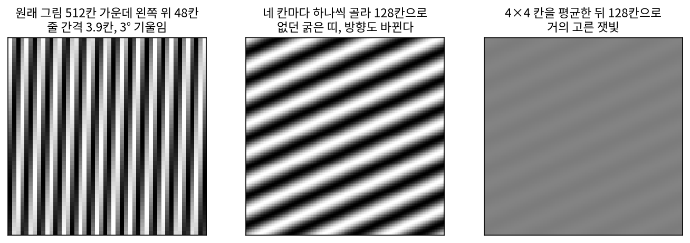
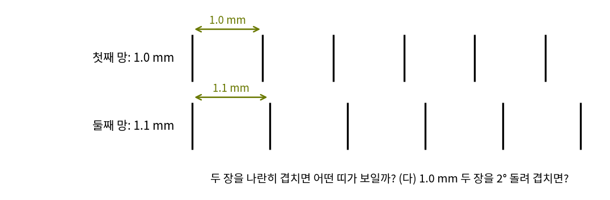
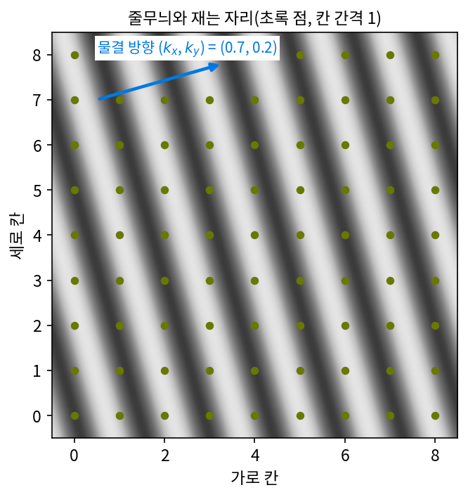
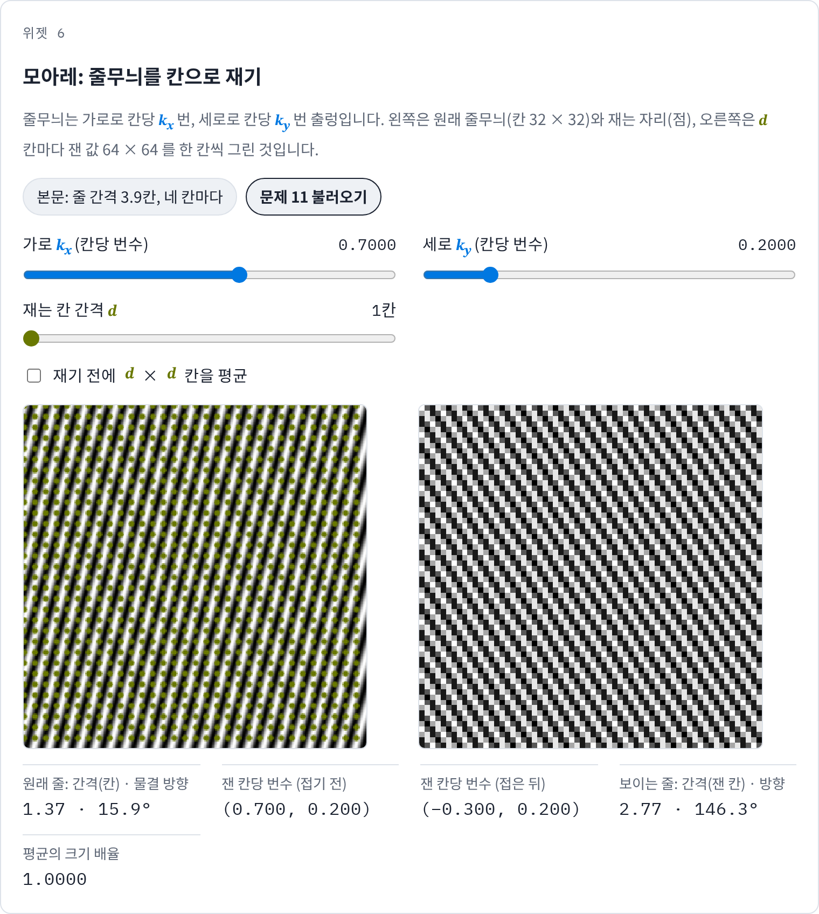
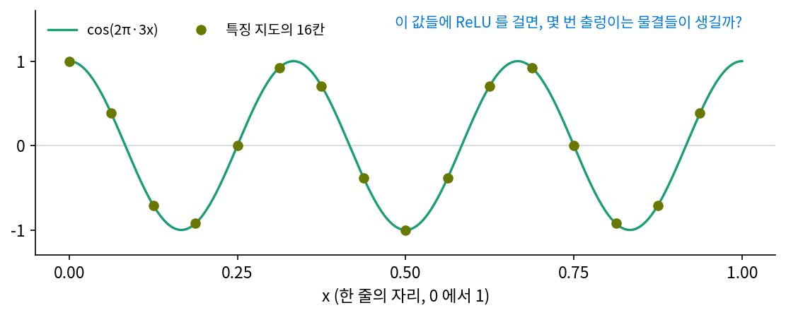

모아레: 가로·세로 칸으로 재면 줄무늬가 돌아간다
사진은 가로와 세로로 늘어선 칸에서 밝기를 잰 것이다. 모니터를 휴대폰으로 찍으면, 모니터의 낱칸이 만드는 아주 가는 무늬를 카메라 센서의 칸이 다시 잰다. 그러면 화면에 없던 굵은 물결 띠가 사진에 생기고, 그 띠는 화면의 줄과 다른 쪽으로 기울어 있기도 하다. 한 줄에서는 빠른 물결이 느린 물결로 둔갑했는데, 가로·세로 두 방향으로 재면 무엇이 더 일어날까?
줄 간격 3.9칸 줄무늬를 네 칸마다 재기
512 × 512칸 그림에 줄 간격 3.9칸이고 세로에서 3° 기울어진 줄무늬가 있다. 줄무늬도 물결이라서, 가로로 칸당 몇 번 출렁이는지(kx)와 세로로 칸당 몇 번 출렁이는지(ky)로 적는다. 이 줄무늬는 (kx, ky) = (0.2561, 0.0134)다.
그림을 128 × 128칸으로 줄이려고 가로세로 네 칸마다 한 칸씩만 고른다. 새 칸 하나는 원래 칸 네 개 폭이므로 출렁임도 네 배로 (1.0242, 0.0537)번이 된다. 한 줄에서처럼 새 칸당 1번의 정수배는 보이지 않는다. 가로 성분 1.0242에서 1을 빼면 0.0242, 세로 성분 0.0537은 절반(0.5)보다 작아 접히지 않는다. 둔갑한 줄무늬 (0.0242, 0.0537)은 새 칸으로 17칸, 원래 칸으로 68칸 간격의 굵은 띠다. 방향도 바뀐다. 원래 물결은 가로축에서 3° 방향으로 출렁였는데, 둔갑한 물결은 65.7° 방향으로 출렁인다. 거의 세로로 서 있던 가는 줄이 크게 기운 굵은 띠가 되었다.
두 방향의 성분이 따로 접히므로, 가로 성분만 접히고 세로 성분은 그대로이면 물결이 가리키는 방향이 돌아간다. 한 줄에서는 주파수만 바뀌었지만, 가로·세로로 재면 방향까지 바뀐다.

재기 전에 거르는 법도 그대로 통한다. 네 칸씩 평균을 내고 고르면, 평균은 가로 성분을 0.0264배, 세로 성분을 0.9956배로 바꿔 줄무늬 전체의 크기가 0.0263배가 된다. 굵은 띠가 거의 사라지고 고른 잿빛이 남는다. 원래의 가는 줄은 128칸으로는 어차피 담을 수 없으니, 거짓 띠보다 잿빛이 정직한 답이다.
가로·세로 칸으로 잰 가는 무늬가 성분마다 따로 접혀, 원래 없던 굵은 띠가 다른 방향으로 나타나는 것을 모아레 (2차원 에일리어싱이 만든 굵은 띠 / moiré pattern)라 한다. 모아레는 칸으로 잴 때뿐 아니라 가는 무늬 두 겹이 겹칠 때도 생긴다. 한 겹이 다른 겹을 재는 칸 노릇을 하기 때문이다(아래 문제 10).
ML에서: 화면에 달라붙은 털
생성 모델 StyleGAN2로 만든 얼굴을 천천히 움직이는 영상으로 만들면, 머리카락 같은 잔무늬가 얼굴을 따라 움직이지 않고 화면의 같은 자리에 붙어 있는 것처럼 보였다. 엔비디아의 카라스(Tero Karras)와 동료들은 2021년 신경정보처리시스템 학회(NeurIPS)에 낸 「에일리어싱 없는 생성적 적대 신경망」(흔히 StyleGAN3)에서 이 증상의 원인을 에일리어싱에서 찾았다. 생성기 안의 특징 지도는 칸으로 잰 그림인데, 해상도를 올리고 내리는 단계와 비선형 함수가 나이퀴스트 주파수 위의 물결을 만들고, 그 물결이 둔갑해 그림의 절대 좌표에 묶인 무늬가 되었다는 것이다. 그들은 특징 지도를 이어진 신호를 잰 샘플로 다루고, 단계마다 필터를 꼼꼼히 두어 그런 물결이 새어 들지 않게 했다. 필터를 둔 생성기는 그림을 반 칸 밀거나 돌려도 무늬가 함께 움직이게 되었다. 비선형 함수가 왜 빠른 물결을 만들고, 필터를 어디에 두어야 하는지는 아래 문제 12에서 따진다.
문제 10. 방충망 두 겹
창문에 방충망 두 장이 겹쳐 있는데, 망의 줄 간격은 한 장이 1.0 mm, 다른 한 장이 1.1 mm 이고 줄은 나란하다. (가) 겹친 곳에 보이는 굵은 띠의 간격은 얼마인가? (나) 두 번째 망이 1.05 mm, 1.01 mm 이면? (다) 간격이 1.0 mm 로 같은 두 장을 2° 돌려 겹치면?


1.0 mm와 1.1 mm 줄이 겹치니까, 띠도 그 사이 어디쯤, 1.05 mm쯤이겠죠.

두 망의 줄이 다시 같은 자리에서 겹치려면 몇 mm를 가야 하죠?

1.0 mm짜리 열한 칸이 11 mm, 1.1 mm짜리 열 칸이 11 mm예요. 11 mm마다 줄이 겹치고 그 사이에서는 엇갈려요. 띠 간격이 줄 간격보다 열 배나 크네요.

주파수로 써 보면 1 mm당 1번과 1/1.1 = 0.909번이야. 차이가 0.0909번이라 띠 간격은 1/0.0909 = 11.0 mm. 네 답이랑 같네.
차이 주파수가 왜 띠로 보일까요? 한 망을 다른 망의 칸으로 잰다고 생각해 봐요.

아, 1번에 가까운 0.909번이 둔갑해서 1 − 0.909 = 0.0909번만큼 느린 물결로 보이는 거네요.
그럼 (나)는 1.05 mm면 21.0 mm, 1.01 mm면 101.0 mm예요. 두 간격이 비슷할수록 띠가 넓어지네요.

(다)는요? 줄 간격이 같으면 차이가 0이잖아요.
음, 돌리면 두 물결이 가리키는 방향이 달라지니까… 방향까지 넣은 주파수로 빼면 0이 아니겠네요.
그 차이의 크기는요?

차이의 크기가 2 sin(1°) = 0.0349번/mm라서 띠 간격은 28.6 mm예요. 살짝만 돌려도 커다란 띠가 생겨요.

사진 찍을 때 모니터를 조금 기울이면 줄무늬가 바뀌던 게 이거였어요. 다음엔 휴대폰을 돌려 가며 찍어 볼게요.
문제 11. 줄무늬의 방향이 돌아간다
줄무늬 (kx, ky) = (0.7, 0.2) (칸당 번수)를 칸 간격 1 로 잰다. (가) 둔갑해 보이는 줄무늬의 (kx, ky), 줄 간격, 물결 방향을 구하라. (나) 줄무늬 (0.3, −0.2) 를 같은 칸으로 재면 (가)와 무엇이 같은가? (다) 칸 간격을 1/2 로 줄이면? (위젯 6의 「문제 11 불러오기」로 확인해 보자.)

0.7은 절반 0.5를 넘으니까 1을 빼서 −0.3, 0.2는 접히지 않아요. 줄 간격은 1/√(0.3² + 0.2²) = 2.774칸이에요. 원래는 1.374칸이었으니 두 배쯤 굵어졌어요. 방향은 원래 15.9°였는데 지금은 146.3°요. 130° 넘게 돌았어요.
줄무늬 (−0.3, 0.2)와 (0.3, −0.2)는 다른 줄무늬예요?

cos(2π(−0.3x + 0.2y))는 cos(2π(0.3x − 0.2y))랑 같으니까 같은 줄무늬네요. 물결 방향 146.3°에서 180°를 빼면 −33.7°, 같은 줄을 반대쪽에서 본 거예요. 그럼 (나)는 (가)랑 아예 같은 샘플이에요.

원래 줄은 물결이 15.9°로 출렁였고, 둔갑한 줄은 −33.7°로 출렁여. 원래 줄이 오른쪽 위로 기울었다면 둔갑한 줄은 반대쪽으로 기울어 보여.

왜 하필 반대로 기울어?
가로 성분만 접히고 세로 성분은 접히지 않아서 그런 것 같아. 하나만 부호가 바뀌었잖아.
(다)처럼 칸 간격을 1/2로 줄이면요?
접는 기준이 칸당 1번이 돼서 0.7도 0.2도 접히지 않아요.

한 줄에서는 음수 주파수가 도는 방향을 뒤집었죠. 가로·세로에서는 성분 하나의 부호가 바뀌는 셈이라 물결의 방향이 거울에 비친 듯 돌아가요.

선형대수에서 벡터의 한 성분 부호만 바꾸면 축에 대한 반사라고 배웠어. 성분마다 따로 접으니까 그 반사가 일어나는 거네.
위젯 6에서 문제 11 설정을 불러와 둔갑한 줄무늬가 어느 쪽으로 기우는지 확인해 보세요.

문제 12. ReLU 가 만든 물결은 어디로 가나
특징 지도 한 줄이 16칸이고, 그 위에 한 줄에 3번 출렁이는 물결 cos(2π·3x) 가 있다(x 는 0 에서 1). (가) ReLU 를 거친 relu(cos(2π·3x)) 를 물결로 나누면 몇 번 출렁이는 물결들이 생기는가? (나) 16칸에서 바로 ReLU 를 하면 그 물결들은 어디로 가는가? (다) 32칸으로 해상도를 올려 ReLU 를 한 뒤, 한 줄에 8번 이상인 물결을 지우고 16칸으로 내리면 무엇이 달라지는가?

ReLU는 음수만 0으로 바꾸니까 출렁이는 횟수는 그대로 3번이죠. 16칸이면 절반이 8이니 문제없어요.
relu(cos)를 그려 보면 어떤 모양이죠? 꼭대기는 둥근데 음수였던 부분은요?
음수였던 부분은 0으로 평평하고 0을 지나는 곳에서 꺾여요. 꺾인 데가 있으면 빠른 물결이 필요하죠.
몇 번 출렁이는 물결이 얼마나 들어 있는지 셈해 볼래요?
셈해 보니 0번(평균) 0.3183, 3번 0.5, 6번 0.2122, 12번 0.0424, 18번 0.0182가 있어요. 9번, 15번은 0이고요.
(나)는 16칸이면 절반이 8이니까 12번은 12 − 16 = −4로 4번 물결이 되고, 18번은 2번 물결이 될 거야.
16칸에서 바로 ReLU 한 값을 물결로 나눠 보니까 원래 없어야 할 4번 물결이 0.0518, 2번 물결이 0.0293 생겼어. 6번 물결도 0.2122가 아니라 0.2207로 조금 틀어지고.
0.0518이면 작아 보이는데, 신경망이 층을 수십 개 지나며 ReLU와 해상도 줄이기를 되풀이하면요?
층마다 그림의 칸 자리에 묶인 가짜 물결이 쌓이겠네요. 그게 화면에 붙은 털이에요.
(다)는요? 32칸에서는 12번 물결이 어디 있죠?
32칸이면 절반이 16이라 12번이 제 자리에 있어요. 그다음에 8번 이상을 지우면 16칸으로 내려도 둔갑할 물결이 없고요.

재 보니 4번 물결이 0.0518에서 0.0072로, 2번 물결이 0.0293에서 0.0089로 줄었어. 그래도 0은 아니네?
남은 건 32칸에서 다시 접힌 더 빠른 물결들이 남긴 거야.

비선형 함수가 물결을 새로 만드는 거였네요. 방충망 두 겹이 새 띠를 만든 것처럼 곱하고 자르는 연산이 새 주파수를 만들고, 그래서 칸을 늘린 데서 계산하고 걸러서 내리는 거고요.